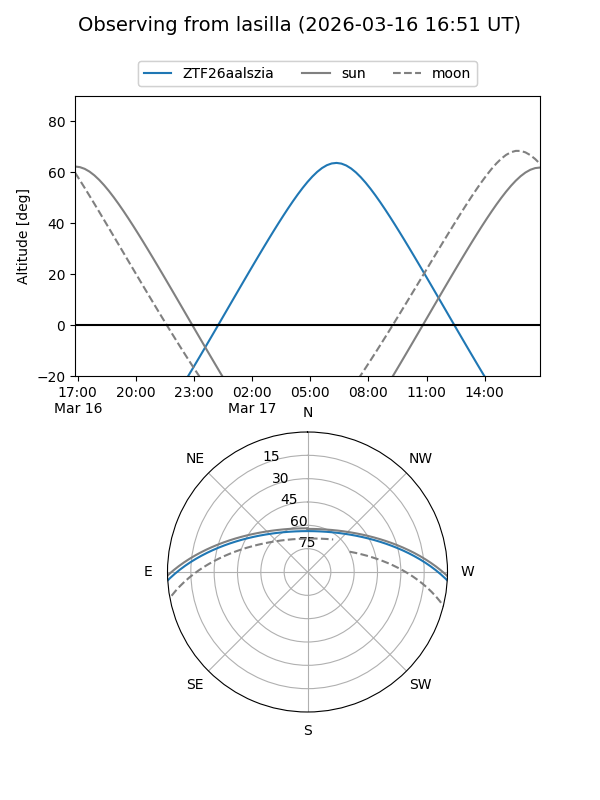
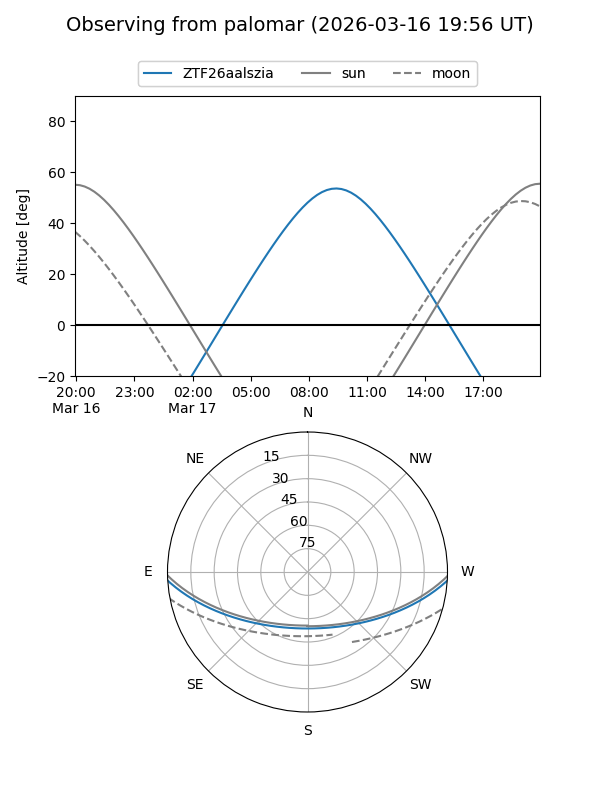

ZTF26aalszia
Target ZTF26aalszia at 2026-03-17 11:55
Aliases and brokers:
FINK: link
Lasair: link
ALeRCE: link
alt names
ZTF26aalszia (ztf,fink_ztf)
Coordinates:
equatorial (ra, dec) = 198.8626,-2.82794
equatorial (HMS+DMS) = 13:15:27.02,-02:49:40.59
galactic (l, b) = (314.8048,+59.48913)
Flags:
Photometry:
last ztfg=19.29
1 ztfg detections
Lightcurve
Visibility


Additional plots